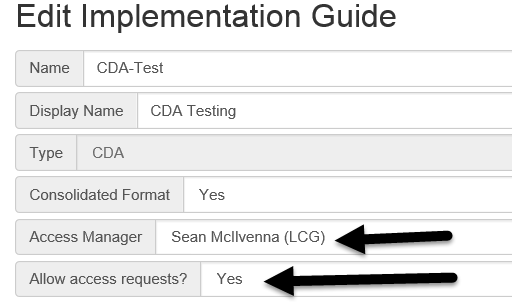
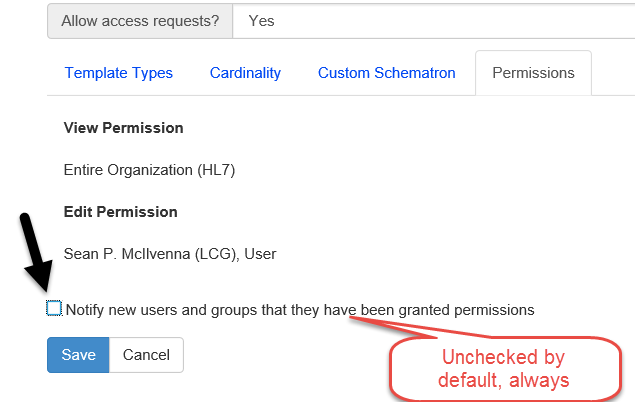

Version 2.17.0
Released on Thursday, Feb 19, 2015
Requesting Permissions
Editing permission is controlled by the settings of each implementation guide (IG). In earlier versions, it was not obvious when a user did not have permissions to access (or edit) an IG. An addition to the permissions feature now allows the user to request access to an IG for viewing and editing.
IG settings control whether or not the guide is listed as available for access through “Allow Access Control” in the Edit Implementation Guide window. In the Browse Implementation Guides list, those that have the option to be accessed show a “Request Access” link. Requests for access are directed via email to the individual selected in the new “Access Manager” field of the IG.
Note: IGs only show up on the “Request Access” window if an “Access Manager” is defined and “Allow Access Requests” is set to “Yes”.

Figure 1: Request Access Window

Permission Notifications
A new checkbox on the “Edit Implementation Guide” screen allows permission notifications to be sent to the new users or groups being granted access to the IG. Notifications are only sent out to new users/groups; pre-existing permissions are not re-notified. The notification email sent to each user includes a link to view the IG, and specifies what types of permission have been granted.


MS Word Export Default Settings
There are many options for exporting templates to the MS Word format. Appropriate publication settings vary from one implementation guide to the next and re-applying those settings for every export to MS Word takes time.
Template authors can now customize “default” settings for an IG on the MS Word Export screen. A new checkbox at the bottom of the export settings screen allows the currently selected settings to be saved as the default settings for that IG.
Note: This option is only available to template authors that have “edit” permission on the selected IG. The new default settings remain in effect when other users export the IG.

MS Word Export Value Set Settings
Export Templates to MS Word now allows users to define the “value set member maximum” for each value set. The “Value Set” tab in the Export Templates window contains a list of all value sets used in that IG. This feature allows the user to customize the maximum number of members printed for each value set.
Note: The “MS Word Export Default Settings” applies to each value set setting; customizations of these settings are also saved as part of the default settings, when selected.

Development Log
Defect |
Empty CodeSystem element appearing in XML export |
Defect |
Template editor's datatype validation should be ignored for FHIR templates |
Defect |
Value sets exported with ellipses even when there are no more active values in the set |
Improvement |
Editing code systems should not allow duplicate identifiers |
Improvement |
Code system identifiers should be treated similarly to template identifiers |
Improvement |
Value set identifiers are not required to be unique |
Improvement |
Treat value set identifiers the same as template identifiers |
Improvement |
Schematron should include disclaimer |
Improvement |
Export IG: Allow override of default number of printed out values in a value set |
Improvement |
Copy Template - have the implied template come up in the metadata fields |
New Feature |
Notify users when they are given permissions to an implementation guide |
New Feature |
Allow authors to "request access" to implementation guides |
New Feature |
Add "Implies" type to "Relationships" tab on Template Viewer |
New Feature |
Select a Value Set dialog has a link for "more results" |
New Feature |
Default settings for MS Word Export on IG |